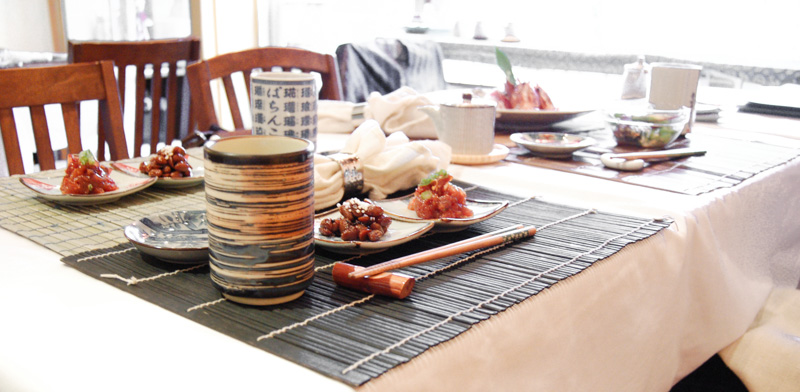
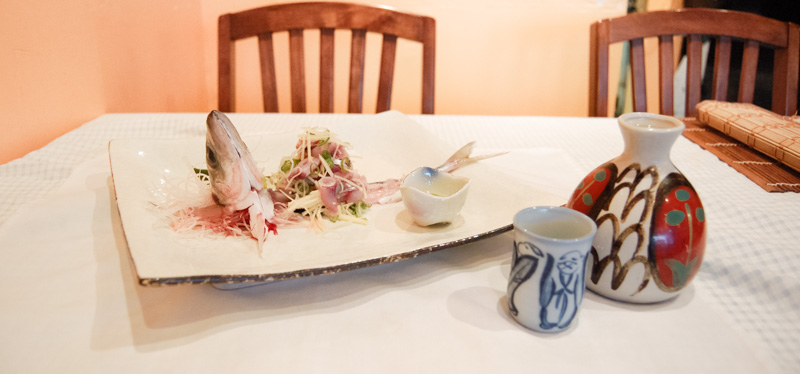

Real food for real people.
Where do you get some of the best sushi in the city? Newmarket. Yup, you read that right, Master sushi chef Jyo sends out the freshest fish at Solo Sushi Ya, plus cooked dishes worth traveling for.
Toronto Star
Owner Jyo Gao, from Yokohama, is the sushi wizard. He leaves the sushi bar again to tell us about tonight’s Eastern European wild white sushi clams, which he says mimic the texture of abalone. The clams are indeed fabulously sweet, tender but with bite. But Gao’s sushi rice steals the show. Not since a $700 dinner (for two) at Hashimoto have I met rice this good, and not before that for a decade. The rice is warm (i.e., freshly made), moist, and its grains more differentiated than anyone else’s I have found hereabouts. The rice is usually merely the vehicle for the fish. Here, it could be the main event. Except that the fish is also astonishing in a way that’s attributable to its freshness and also to Mr. Gao’s knife skills. His fiery house wasabi doesn’t hurt either.
Mr. Gao is an artist, a man of integrity, who leads his customers gently toward what he thinks they should eat. Maybe he has only the one inarticulate server because he wants to control the communication. He is abetted by having only 32 seats in the cozy room, its walls crammed with landscapes by his 16-year-old daughter, who is channelling Tom Thomson.
There are two cooks in the kitchen who usually do a great job. Their sole misstep is negima yaki: Horribly overcooked beef and green onions with teriyaki sauce. Save for that one inedible item, their work measures up to Gao’s sushi. Oft times the combo of cooked and raw they offer is superb: Dragon roll, so often a flavour-free cliché, is very fresh, melt-in-the-mouth eel with avocado, and, and its heart, ultra-crisp fat tempura shrimp. After the dragon roll, the master comes forth from his sushi bar yet again, to inquire: “How are you doing? Is it enough? Do you want a little more?”
Who could decline? A little more hamachi and some clean-tasting, perfect uni later, both on the unbelievable rice, and it’s time to stop. Reluctantly. We trust Mr. Gao now, we are putty in his hands. He is the master and we the willing recipients of his edible art.Drive far enough up the 404 and you’ll discover two things: not only are there more stars in the sky, but there’s also this one tucked in a poky strip plaza. Master sushi chef Jyo Gao has been slicing meltingly soft fish in this cozy room for nine years, yet he’s as passionate about ingredients, tradition, nutrition (don’t even get him started on vegetarianism) and the art of sushi as a newbie. (Trust us, you’ll be star-struck, too.) The thick menu has pages and pages dedicated to an impressive selection of sakes, as well as sashimi, maki rolls, noodles and, for the adventurous, omakase ($55). Flavours are delicate, texture is paramount, and the presentation consistently artful. A tiny pickled wild mountain peach arrives alongside tuna, smoked mackerel, and burdock root wrapped in beef. Pork gyoza are crispy and light as air. A green apple–soy milk custard is the perfect finish. Reverential service. Mains $20–$28.


Solo Sushi Ya
291 Davis Drive
Newmarket, Ontario
L3Y 2N6
(905) 898-6868
Solo Sushi Bekkan
3 Grovesnor Street
Toronto, Ontario
M4Y 1A9
(416) 925-3388